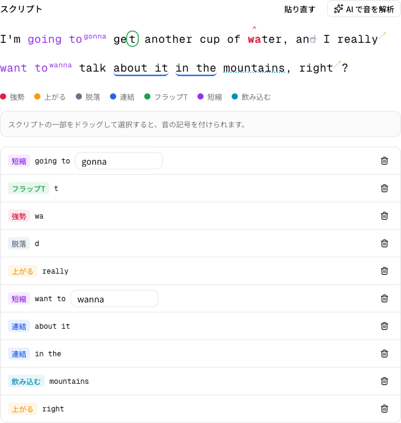
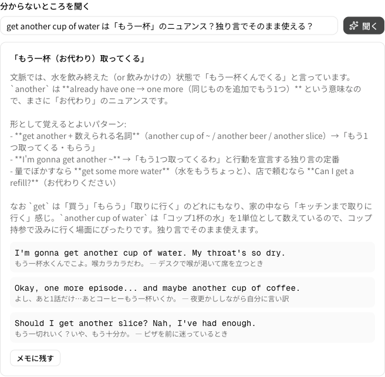
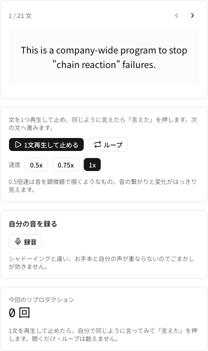

repro-talk
英語学習を「始められる」ようにして、
「続けられる」ようにする、自分専用アプリ
安尾 ／ エンジニアリングマネージャー
- 社内向けのシステム・基盤を作るチームのマネジメント
- 普段、業務で自分でコードを書くことは、ほぼありません
- 仕事道具は PCとスマホだけ。紙のノートもペンも使いません
— この2つは、あとで効いてきます
読み書きは、翻訳ツールで足りる。
会話は、翻訳を挟めない。
- 海外チームとの定例ミーティング、Slack・ドキュメントでのやりとりがある
- 読み書きは困らない。翻訳ツールを使えば足りる
- 会話はリアルタイム。翻訳を挟む時間がない
言いたいことが言えない。言っても伝わらない。言われたことが理解できない。
聞き返しても、やっぱり理解できない。
本当は海外メンバーと1on1をしたい。言語を理由に、できていない。
やって、伸びてもいた。
それでも仕事の会話は変わらなかった。
- オンライン英会話 / 単語アプリ / 洋画のシャドーイング → 続かなかった
- 英語コーチングでは伸びた（A2 → B1）
- ただし題材が業務ではなかったので、仕事の会話には届かなかった
そのあとに見つけた学習法
① 完成された英語を「100」のまま受け取る
1文再生 → 止める → 同じように言う
② 「0」から自分で作り出す
お題に沿って独り言
必要なのは、この2つだけ。これをやれば伸びる、と素直に思えた。
「続かない」ではなく、「始められない」だった
glass of water in‿the mountains.
教わったやり方 ＝ 紙に行間を空け、カラーペン7色で音の記号を書き込む
紙の習慣もカラーペンも、持っていなかった。
- 自分に合った動画を探す
- 練習する区間を選ぶ
- 同じ30秒を何度も再生する
- 自分の声を録る
- 覚えたフレーズを書き留める
- 分からない音をChatGPTにコピペする
意志の弱さだと思っていた。正体はこの小さな面倒の積み重ねだった。
repro-talk
紙も、カラーペンも、ChatGPTへの往復も、
1つのアプリに畳み込んだ。
3本の柱と、自分で足した1本
100 リプロダクション
1文再生して止め、同じように言う。区間ループ、0.5倍速で「音を顕微鏡で見る」。
↔ フレーズ
覚えた型を独り言へ受け渡す。初回使用で卒業。ここで 0 と 100 が繋がる。
0 独り言
お題に沿って「1人電話」。歩きながらスマホ片手。音声は残さず時間だけ記録。
＋ 瞬間英作文 — 教わった方法論には無い、自分で足した1本
毎日使ううちに「100を受け取っても、0からは出てこない」という穴が見えた。日本語で考えて詰まるなら、そこだけ別に鍛えればいい。
デモ — 仕事で言えなかった一言を、素材にする

- 1回再生して、止まる
区間を一度決めれば、あとはボタンひとつ - ドラッグして、音の記号を付ける
紙とカラーペンの代わりが、これ - 選択して、AIに聞く
ChatGPTへのコピペの代わりが、これ
5枚目で挙げた面倒が、この1画面で消えています。
止まる場所を、ひとつずつ消した

紙とカラーペン
→ 画面上のドラッグ

ChatGPTへの手動コピペ
→ アプリ内で完結

練習したい英文が動画に無い
→ 自分で書いた英文を貼る
他にもあります。全部、図解に書きました。
減らすだけでなく、「続く」を可視化した
- 手が止まる場所を、そのまま機能にした
探す／選ぶ／繰り返す／録る／残す を、1操作に翻訳した - AIをアプリに畳み込み、行き来をゼロにした
LLMは数値位置が不安定なので、quote＋出現回数で復元している - 連続日数・ヒートマップ・回数・時間を、常に目に入る場所に出した
積み上がった記録が見えると、途切れさせたくなくなる
面倒を消して始められるようになり、可視化して続けられるようになった。
「動くはず」が動かない罠を、ひとつずつ踏んだ
読み上げが無音で固着 → クラウドTTSへ全面移行 → 本番だけ保存が3段の罠
ブラウザ標準の読み上げが、使ううちに無音で固まる。延命では回復しきれないと判断して作り直した。
すると本番だけ保存が通らない。データが壊れる → 権限が効かない → 認証キーの形式が違う。3段を1つずつ剥がした。
- iOS Safari は audio/mp4。決め打ちすると無音になる
- YouTube の区間ループは素直に作れない。終端を監視して戻す
— 一番時間を使ったのは、作り直す判断と、本番でしか出ない問題の切り分け
11日、途切れていません
一番使っているのは、あとから自分で足した瞬間英作文だった。
逆に、独り言はまだ習慣になっていない。次に面倒を消しにいくのは、そこ。
自分の武器は、自分で作れる。
動画を探す・区間を戻す・紙とペンで記号を書く・ChatGPTへコピペする——
いくつもの道具を行き来していた学習が、自分で作った1つのアプリに収まった。
続かないことがあるなら、意志の問題ではなく面倒の問題かもしれない。